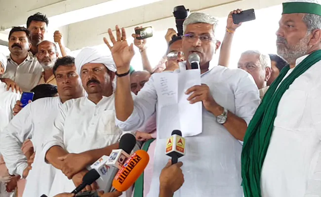
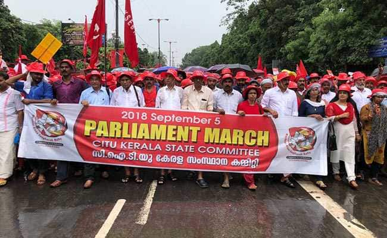

किसान
डेली

आखिर क्या हैं किसानों की मांगें और क्या कहा सरकार ने
?
जानिए...
नई दिल्ली: दिल्ली-यूपी बॉर्डर पर मंगलवार को हजारों किसान अपनी 15 सूत्रीय मांगों के साथ धरने पर बैठे रहे. हालांकि इस दौरान केंद्रीय कृषि राज्यमंत्री गजेंद्र शेखावत इस आंदोलन को खत्म करवाने के लिए आए और उन्होंने किसानों को बहुत से आश्वासन भी दिए और दावा किया कि किसानों की ज़्यादातर मांगें सरकार मान रही है. लेकिन लगभग 15 मिनट के केंद्रीय मंत्री के भाषण के बावजूद किसान आंदोलन खत्म करने को तैयार नहीं हुए.

मोदी सरकार के खिलाफ देश भर के किसान-मजदूरों ने रामलीला मैदान से संसद तक किया पैदल मार्च
मोदी सरकार के खिलाफ देश भर के किसान-मजदूरों का ने रामलीला मैदान से संसद तक किया पैदल मार्च दिल्ली में आज किसान-मजदूर मार्चनई दिल्ली: आज देश की राजधानी दिल्ली में वाम दलों के समर्थन में आज यानी बुधवार को किसान और मजदूर सगंठन मोदी सरकार के खिलाफ हल्ला बोल रहे हैं. वाम दलों के समर्थन वाले किसान एवं मजदूर संगठनों की ओर से बुधवार को दिल्ली के रामलीला मैदान संसद कर मार्च का आयोजन किया गया.महंगाई से राहत, न्यूनतम भत्ता, किसानों की कर्जमाफी और फसलों की वाजिब कीमत की मांग को लेकर बुधवार को केंद्र की मोदी सरकार के खिलाफ दिल्ली में हज़ारों किसान और मजदूर रामलीला मैदान से संसद तक मार्च किया.. ऐसा पहली बार हो रहा है जब किसान एवं मजदूर किसी एक रैली में एकजुट होकर हिस्सा ले रहे हैं. आज सुबह से ही दिल्ली की सड़कों पर किसानों और मजदूरों की रैली का प्रभाव दिखना शुरू हो गया और लोगों को जाम का सामना करना पड़ा.
राहत
योजना